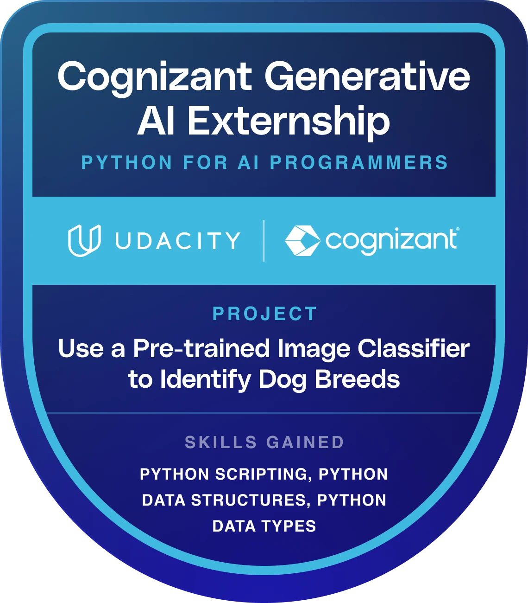
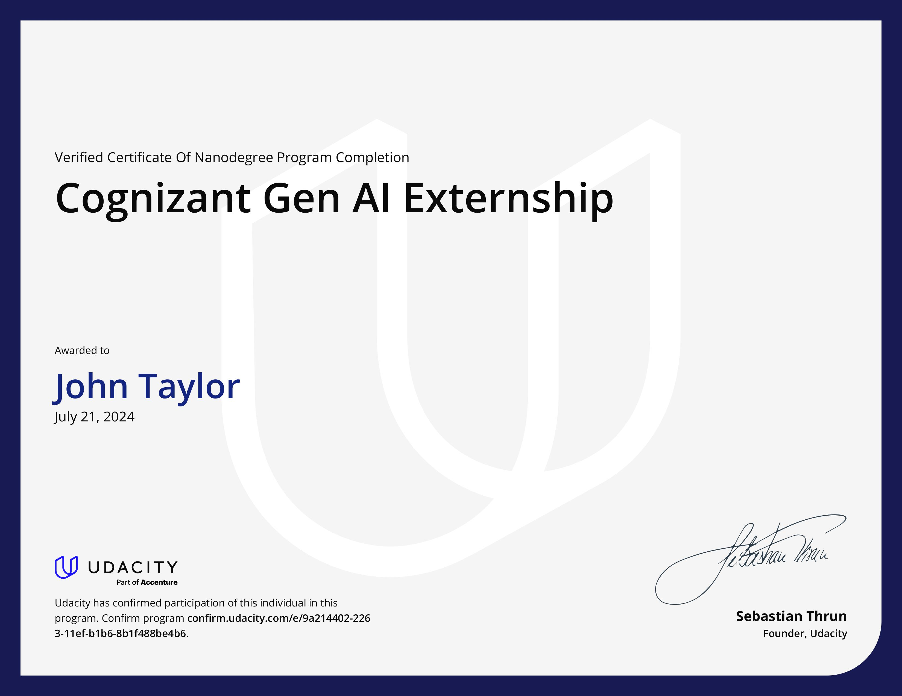

Generative AI Externship, June 2024 - August 2024

My experience at Cognizant as a Generative AI Extern was transformative. I worked on various projects involving AI and machine learning, where I gained hands-on experience with cutting-edge technologies. This opportunity allowed me to develop my skills in a real-world setting, collaborating with talented professionals and contributing to innovative solutions. I will now talk about the highlights of this program:
Project 1: In this project, I developed a dog classifier using pre-trained LLMs RESNET, VGG, and ALEXNET to classify dog breeds, then sort incorrectly classified results and compare the performance of the three CNN models. Given a set of 1000 random dog images, VGG outperformed the other LLMs by correctly classifying dog breeds 93.3% of the time. This project displays my expertise in Python, which you can check out by clicking here
Project 2: My second project focused on the training process of LLMs and understanding the fundamentals of Generative AI. My main goal was to classify tweets into specific emojis or emotions. I started by fine-tuning a roberta-bases model using the PEFT (Parameter-Efficient Fine-Tuning) technique with the Lora Config method to improve emoji classification accuracy. Leveraging the Hugging Face ecosystem, I preprocessed the "cardiffnlp/tweet_eval" dataset, implemented the fine-tuning process, and evaluated the model's performance before and after training. The results showed more than a 5x increase in accuracy. The Technologies and libraries I used included Python, Hugging Face Transformers, Datasets, Evaluate, PEFT, and Scikit-learn, demonstrating efficient model adaptation for specific tasks. To view the project in more detail, click here
After completing the program, I earned my Nanodegree in Generative AI. This achievement marks a significant milestone in my professional journey, equipping me with the skills necessary to excel in the field of AI.
